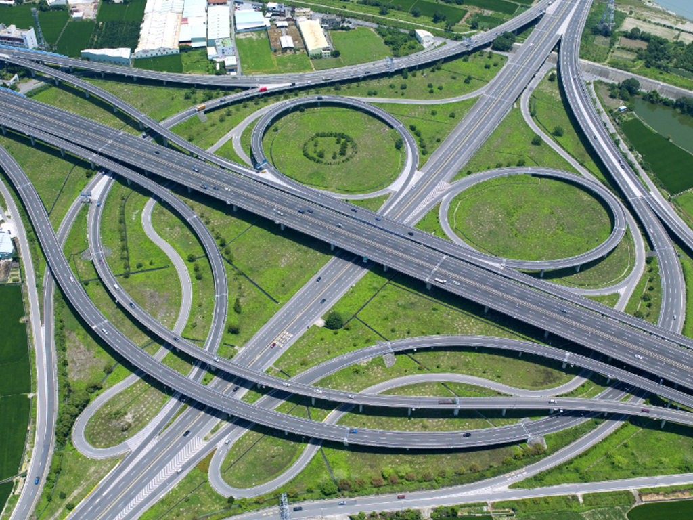

累積經驗(年)
專案數
部門人數
專業證照比例(%)

工程開發的全生命週期服務
從1970年代起，中興工程顧問公司即伴隨臺灣經濟起飛的腳步，參與產業園區、科學園區等各類型園區規劃與開發工作，服務內容涵括政策研議、區址評估、可行性評估、實質規劃、工程規劃、環境影響評估、土地取得、產業招商、開發營運、土地租售、工程設計、施工監造等全生命周期的技術服務工作，以及積極參與國內高、快速公路及重要公路等建設工程。
規劃、工程及設計全方位技術人才
部門的83%成員擁有專業證照，包含技師、職安衛、品管及採購等類別，技師有都市計劃、土木、水利、交通工程、建築、測量與景觀設計等技術人才，橫跨規劃、工程與設計等多元領域人才。
全台園區開發歷年統計
中興公司近50年來，迄今已參與臺灣85%以上工業區及科學園區開發案，總服務數104處，面積近4萬公頃，為國內最具實際執行經驗的團隊。
公路工程累積里程
中興公司的公路工程基於環境保護、民意期待與工程技術等專業執行力進行公路工程可行性與規劃設計，為經驗最豐富之團隊，國內的公路工程可行性分析已累計500公里以上，下圖為公路開發工程累計長度。
園區服務性質比例
主要參與科學園區及產業園區開發工作之全生命週期服務，包含區址評估、規劃、報編、設計、施工監造、招商及開發總顧問等所有業務。